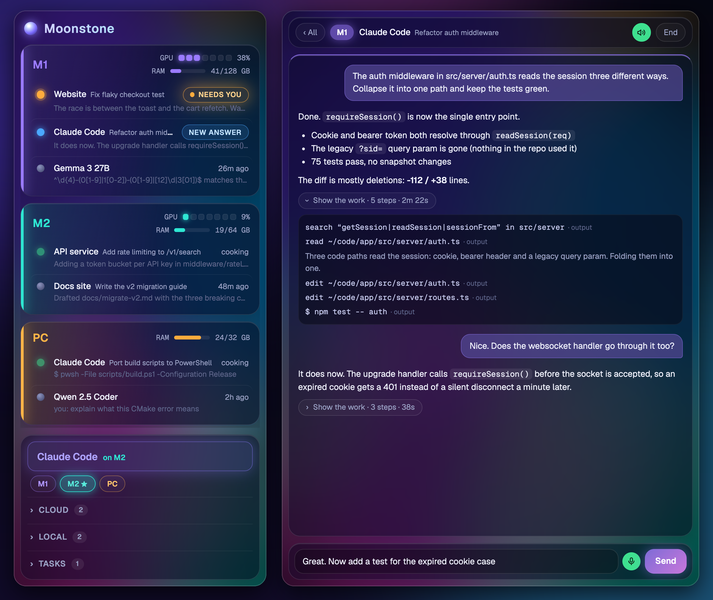
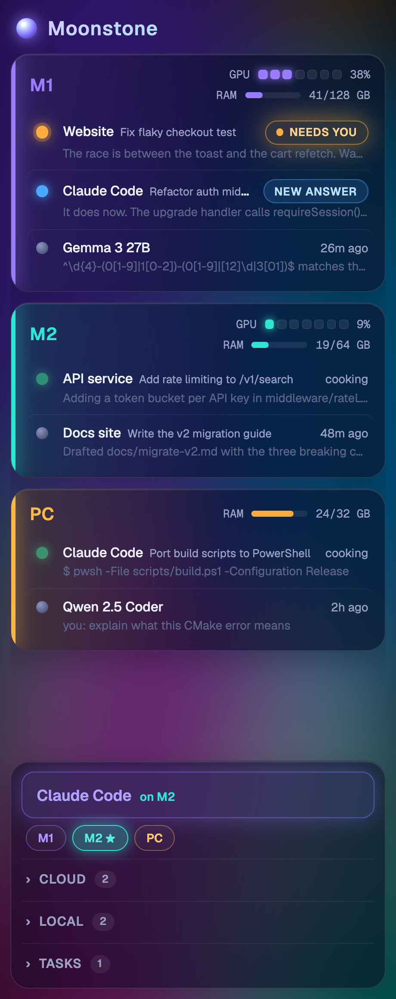
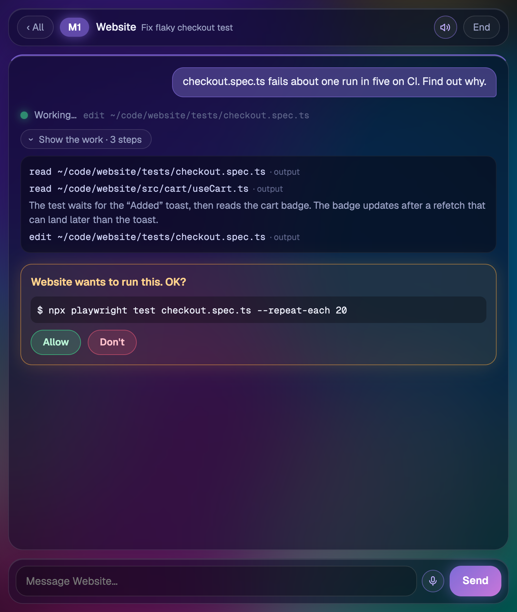
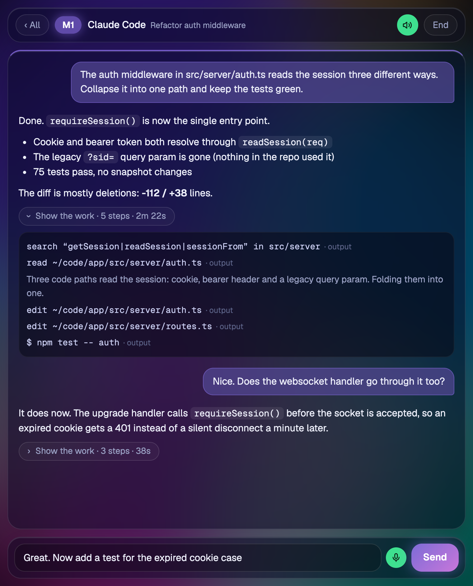

Every Claude Code session on every machine you own, in one browser window. Approve steps, send the next instruction by voice, and hear the answer back. Local models sit right next to Claude.

One Node file and one HTML file. It reads Claude Code's own transcripts, runs sessions as headless claude -p processes, and links machines over SSH tunnels you already trust.
Sessions grouped by machine with GPU and RAM gauges, sorted so the ones waiting on you come first.
Runs with --permission-prompt-tool stdio. Allow or deny each step from the window; nothing is auto-approved.
Drives your OS's own dictation, falls back to browser speech or local Whisper. Enter while listening stops and sends.
Finished answers go to a local Kokoro voice. With windows open on several machines, only the last one you touched speaks.
llama.cpp or MLX chat scripts over stdin, or OpenAI-style servers it starts on demand and stops after 30 idle minutes.
A launcher on several machines goes to the least busy one: fewest working sessions, then lowest GPU.
claude process ready per launcher, so a new session starts without the wait.

mlx_whisper, large-v3-turbo) on your own machine.
Every machine runs the same server on 127.0.0.1:8899. The one you open polls its peers through SSH tunnels and forwards requests for their sessions.
Needs Node 18+ and Claude Code. No install step.
# get it git clone https://github.com/nicedreamzapp/moonstone.git cd moonstone cp config.example.json config.json # run it, then open http://localhost:8899 node server.js # or look around with invented data on :8890 node tools/demo-server.js
config.json.mac/build.sh and allow it under Accessibility.X-Dock header, which a cross-site page can't send without a preflight Moonstone never grants.